Migrate from AWS
This guide is for teams already running the AWS Solution Dynamic Image Transformation for Amazon CloudFront (v7, serverless architecture) who want to move to Dynamic Image Transformation for Google Cloud CDN with zero client-side changes.
The one-line promise this migration is built on:
The URL API, the signature algorithm and the error contract are identical to AWS (see the compatibility specification). Your apps, mobile clients, CMS templates and pre-generated signed URLs keep working — the only thing that changes is where the DNS record points.
This page is the same content as
docs/MIGRATION.md
in the repository.
1. Migration at a glance
| Phase | What happens | Client impact | Typical duration |
|---|---|---|---|
| 1. Assess | Inventory the AWS stack: parameters, buckets, traffic, features in use | none | 1–2 days |
| 2. Copy images | S3 → GCS with Storage Transfer Service (incremental, repeatable) | none | hours–days (data size) |
| 3. Copy the signing secret | Same HMAC key into Secret Manager → old signed URLs stay valid | none | minutes |
| 4. Deploy on GCP | Launch Wizard or Terraform, parameters mapped 1:1 | none | ~30 min |
| 5. Validate | Unit/e2e suite + replay of real production URLs against the new endpoint | none | 1–2 days |
| 6. Pre-issue the TLS cert | Certificate Manager DNS authorization — cert is ACTIVE before cutover | none | ~1 hour |
| 7. Cut over | Weighted DNS 10% → 50% → 100%, low TTL, watch error rates | transparent | 1–7 days (canary bake) |
| 8. Roll back (if needed) | Flip DNS weights back — AWS stack is still running | transparent | minutes |
| 9. Decommission | Delete the CloudFormation stack, retire S3 copies after a retention window | none | after bake period |
Both stacks run in parallel during the whole migration; there is no "big-bang" moment and no maintenance window.

2. Phase 1 — Assess the AWS deployment
Collect the current stack parameters — they map 1:1 onto this solution:
aws cloudformation describe-stacks \
--stack-name <your-DIT-stack> \
--query "Stacks[0].Parameters" --output tableAlso worth capturing:
# Lambda env of the image handler (authoritative runtime config)
aws lambda get-function-configuration \
--function-name <stack>-ImageHandlerFunction... \
--query "Environment.Variables"
# Which request types / filters does production actually use?
# Pull a day of CloudFront access logs and look at the path shapes:
# /eyJi... → Default (base64 JSON)
# /fit-in/... → Thumbor
# anything else → Custom (rewrite)
aws s3 cp s3://<cf-log-bucket>/<prefix>/ . --recursive --exclude "*" --include "*2026-07*"Checklist to fill in before moving on:
| Question | Where to find it | Drives |
|---|---|---|
| Which request types are used (Default / Thumbor / Custom)? | CloudFront logs | validation scope; REWRITE_* vars for Custom |
SourceBucketsParameter value | CFN parameters | GCS bucket names + BUCKET_MAP |
Is EnableSignatureParameter = Yes? | CFN parameters | secret migration (Phase 3) |
| Secrets Manager secret name + JSON key | CFN parameters | same values on GCP |
AutoWebPParameter, CorsEnabledParameter, CorsOriginParameter | CFN parameters | same values on GCP |
| Fallback image bucket/key | CFN parameters | copy that object too |
| Monthly requests + cache hit ratio | CloudFront console → Reports | cost estimate, canary sizing |
| Do any clients depend on the 6 MB / 413 response limit? | app teams | COMPAT_AWS_LIMITS |
| TTL of the DNS record pointing at CloudFront | Route 53 | cutover speed; lower it now |
Tip: lower the DNS TTL of your image hostname to 60 s at the start of the project. TTL changes need one full old-TTL period to propagate, so doing it early makes the cutover (and any rollback) fast for free.
3. Phase 2 — Parameter mapping (CloudFormation → Terraform)
The Launch Wizard prompts and Terraform variables were deliberately named after the CloudFormation parameters. Full mapping:
| AWS CloudFormation parameter | Terraform variable (infra/terraform) | Container env (identical on both clouds) | Notes |
|---|---|---|---|
SourceBucketsParameter | source_buckets | SOURCE_BUCKETS | comma-separated; first entry is the default bucket |
CorsEnabledParameter | cors_enabled | CORS_ENABLED | Yes/No |
CorsOriginParameter | cors_origin | CORS_ORIGIN | |
AutoWebPParameter | auto_webp | AUTO_WEBP | see §11 differences — served via Vary: Accept |
EnableSignatureParameter | enable_signature | ENABLE_SIGNATURE | |
SecretsManagerSecretParameter | secret_name | SECRETS_MANAGER | Secret Manager secret ID |
SecretsManagerKeyParameter | secret_key_name | SECRET_KEY | JSON key inside the secret |
EnableDefaultFallbackImageParameter | enable_default_fallback_image | ENABLE_DEFAULT_FALLBACK_IMAGE | |
FallbackImageS3BucketParameter | fallback_image_bucket | DEFAULT_FALLBACK_IMAGE_BUCKET | now a GCS bucket |
FallbackImageS3KeyParameter | fallback_image_key | DEFAULT_FALLBACK_IMAGE_KEY | |
DeployDemoUIParameter | deploy_demo_ui | — | served from a static bucket at /demo/ |
(SIH v5 RewriteMatchPattern / custom template) | rewrite_match_pattern / rewrite_substitution | REWRITE_MATCH_PATTERN / REWRITE_SUBSTITUTION | enables the Custom request type |
SharpSizeLimit (env) | sharp_size_limit | SHARP_SIZE_LIMIT | |
LogRetentionPeriodParameter | — | — | set a Cloud Logging retention policy on _Default |
CloudFrontPriceClassParameter | — | — | no equivalent needed: Cloud CDN is global, single price sheet |
LambdaMemorySizeParameter | — | — | Cloud Run deploys at 1 vCPU / 1 GiB; adjust in modules/cloud-run if needed |
| — (GCP addition) | bucket_map | BUCKET_MAP | s3name=gcsname aliases — see below, the key migration helper |
| — (GCP addition) | compat_aws_limits | COMPAT_AWS_LIMITS | Yes replicates Lambda's 6 MB / 413 TooLargeImageException limit |
BUCKET_MAP — keep S3 bucket names working in URLs
If your production URLs embed bucket names — Default requests
with a "bucket" field in the JSON, or Thumbor/Custom paths like
/my-s3-bucket:photos/cat.jpg — those names are S3 names and won't
exist on GCS (bucket names are global and rarely portable). You do
not need to re-generate any URLs. Set:
bucket_map = "my-s3-bucket=my-project-images,other-s3-bucket=my-project-other"Every request naming my-s3-bucket is transparently served from the
GCS bucket my-project-images. Explicit s3:my-s3-bucket:key
prefixes are accepted and mapped the same way. The allow-list check
(SOURCE_BUCKETS) runs on the mapped name, matching AWS
semantics.
4. Phase 3 — Copy the images (S3 → GCS)
Recommended: Storage Transfer Service — managed, parallel, checksummed, free of egress-VM plumbing, and most importantly repeatable/incremental: run it once for the bulk copy, then run it again (or schedule it daily) so late writes to S3 keep flowing in until the write path is cut over.
# One-off AWS credentials for the transfer (S3 read-only)
cat > /tmp/aws-creds.json <<'EOF'
{"accessKeyId": "AKIA...", "secretAccessKey": "..."}
EOF
# Destination bucket (Terraform also creates <prefix>-source for you;
# any bucket listed in SOURCE_BUCKETS works)
gcloud storage buckets create gs://my-project-images \
--location=asia-southeast1 --uniform-bucket-level-access
# Bulk copy + later incremental re-runs (only changed/new objects are copied)
gcloud transfer jobs create s3://my-s3-bucket gs://my-project-images \
--source-creds-file=/tmp/aws-creds.json \
--name=dit-migration-images
# Re-run incrementally any time:
gcloud transfer jobs run dit-migration-imagesFor small buckets (< a few GB) a plain copy from any machine with both CLIs is fine:
aws s3 sync s3://my-s3-bucket /tmp/images && \
gcloud storage cp -r /tmp/images/* gs://my-project-images/Verify object counts and spot-check checksums before validation:
aws s3 ls s3://my-s3-bucket --recursive --summarize | tail -2
gcloud storage ls -r gs://my-project-images/** | wc -lDon't forget the fallback image object if
ENABLE_DEFAULT_FALLBACK_IMAGE=Yes.
Keys must stay identical. The solution addresses objects by the exact key that appears in the URL/JSON — do not rename, re-prefix or flatten paths during the copy.
5. Phase 4 — Copy the signing secret
Skip this section if EnableSignature is No.
Signatures are HMAC-SHA256(path + sorted query) hex — the
same key produces the same signature on both clouds, so migrating the key
means every already-issued signed URL (including long-lived ones baked into emails
or apps) keeps validating. Copy the secret JSON as-is:
# Pull the exact JSON document from AWS Secrets Manager
aws secretsmanager get-secret-value \
--secret-id <SecretsManagerSecretParameter> \
--query SecretString --output text > /tmp/dit-sig.json
# e.g. {"signatureKey":"<hex-or-passphrase>"}The Terraform stack creates the Secret Manager secret for you — pass the document in at apply time (never commit it):
terraform apply -var-file=example.tfvars \
-var "signature_secret_json=$(cat /tmp/dit-sig.json)"Keep secret_key_name equal to the AWS
SecretsManagerKeyParameter (the JSON key, e.g.
signatureKey). Then delete /tmp/dit-sig.json and
/tmp/aws-creds.json.
6. Phase 5 — Deploy the GCP stack
Use either deployment path — they drive the same Terraform modules:
- Launch Wizard (CloudFormation-style prompts):
infra/launch-wizard/launch-wizard.sh— every prompt name matches the CFN parameter it replaces. Supports--dry-run. - Terraform directly:
infra/terraform/with a tfvars file.
A migration-flavored terraform.tfvars looks like:
project_id = "my-project"
region = "asia-southeast1"
domain = "img.example.com" # the SAME hostname CloudFront serves today
source_buckets = "my-project-images"
bucket_map = "my-s3-bucket=my-project-images"
auto_webp = "Yes" # copy your AWS values
cors_enabled = "No"
enable_signature = "Yes"
secret_name = "dit-signature-secret"
secret_key_name = "signatureKey"
compat_aws_limits = "No" # "Yes" only if clients depend on the 6 MB/413 behaviorDeploy, then note the outputs — you will need lb_ip for Phase 7:
cd infra/terraform
terraform init
terraform apply -var-file=terraform.tfvars \
-var "signature_secret_json=$(cat /tmp/dit-sig.json)"
terraform output # api_endpoint, lb_ip, cloud_run_url, ...The Google-managed certificate for domain stays
PROVISIONING until DNS points at the LB — that is expected and does
not block validation: Phase 6 validates over the LB's IP/HTTP or
the pre-issued Certificate Manager cert (Phase 7a), so you never need to cut DNS
over just to test.
7. Phase 6 — Validate before any traffic moves
7.1 Run the shipped test suites
deployment/run-unit-tests.sh # 299 unit tests
BASE_URL=http://<lb_ip> deployment/run-e2e-tests.sh # 7 e2e tests against the live stack7.2 Replay real production URLs (shadow diff)
The strongest signal is your own traffic. Extract the most frequent image paths
from a day of CloudFront access logs (field 8 is cs-uri-stem), then
replay each against both stacks and diff status, content type and pixels:
# top-1000 production paths
zcat *.gz | awk -F'\t' '$8 ~ /^\// {print $8}' | sort | uniq -c | sort -rn \
| head -1000 | awk '{print $2}' > paths.txt
AWS=https://img.example.com # still pointing at CloudFront
GCP=http://<lb_ip> # or https with the pre-issued cert
while read -r p; do
a=$(curl -s -o /tmp/a -w '%{http_code} %{content_type}' "$AWS$p")
g=$(curl -s -o /tmp/g -w '%{http_code} %{content_type}' "$GCP$p" -H "Host: img.example.com")
if [ "$a" != "$g" ]; then echo "HEADER-DIFF $p aws[$a] gcp[$g]"; fi
# optional pixel-level check (sizes can differ by a few bytes across encoder versions):
# compare -metric AE /tmp/a /tmp/g null: 2>&1
done < paths.txtWhat to expect:
- Status codes, error JSON bodies,
Content-Type— must match exactly. - Byte sizes — may differ slightly (sharp/libvips encoder version drift); visual output should be equivalent. Use a pixel diff, not a byte diff.
smartCropoutput — Cloud Vision and Rekognition draw slightly different face boxes; crops are equivalent but not byte-identical. Spot check visually.
7.3 Parity checklist
- ☐ One URL of each request type in production (Default / Thumbor / Custom) returns 200
- ☐ A signed URL generated by your existing AWS signing code validates on GCP
- ☐ An unknown key returns
404 {"status":404,"code":"NoSuchKey",...} - ☐ A tampered signature returns
403 SignatureDoesNotMatch - ☐
AUTO_WEBP: a request withAccept: image/webpreturnsimage/webp, without it returns the original format, and the response carriesVary: Accept - ☐ Fallback image behavior (if enabled) matches
- ☐ CDN caching works: two
GETs to the same URL → second hasAgeheader (Cloud CDN does not cacheHEAD— don't test withcurl -I)
8. Phase 7 — Cut over
8a. Pre-issue the TLS certificate (zero-downtime prerequisite)
The classic Google-managed certificate created by Terraform can only activate after DNS points at the LB — a chicken-and-egg problem for zero-downtime migrations. Solve it with Certificate Manager DNS authorization, which proves domain ownership via a one-off CNAME and issues the cert while CloudFront still serves 100% of traffic:
gcloud certificate-manager dns-authorizations create dit-authz \
--domain=img.example.com
gcloud certificate-manager dns-authorizations describe dit-authz \
--format="value(dnsResourceRecord.name,dnsResourceRecord.data)"
# → add that CNAME record in your DNS (does not affect serving traffic)
gcloud certificate-manager certificates create dit-cert \
--domains=img.example.com --dns-authorizations=dit-authz
gcloud certificate-manager maps create dit-cert-map
gcloud certificate-manager maps entries create dit-cert-map-entry \
--map=dit-cert-map --certificate=dit-cert --hostname=img.example.com
# Attach the map to the HTTPS proxy created by Terraform
# (a certificate map takes precedence over the classic cert on the proxy)
gcloud compute target-https-proxies update <prefix>-https-proxy \
--certificate-map=dit-cert-mapWait until gcloud certificate-manager certificates describe dit-cert
shows ACTIVE, then verify HTTPS works against the LB IP before touching
DNS:
curl -sv --resolve img.example.com:443:<lb_ip> \
https://img.example.com/<any-test-path> -o /dev/null8b. Canary with weighted DNS
With certs live on both sides, shift traffic gradually (Route 53 example):
# 10% GCP / 90% CloudFront — two weighted records for the same name:
# img.example.com A <lb_ip> weight 10, set-id "gcp"
# img.example.com ALIAS dxxxx.cloudfront.net weight 90, set-id "aws"Bake at 10% for a day, watching both sides, then 50%, then 100%. Keep TTL at 60 s throughout.
What to watch on GCP during the canary:
# LB: any 4xx/5xx (compare rate against your CloudFront baseline)
gcloud logging read 'resource.type="http_load_balancer"
httpRequest.status>=400' --freshness=1h --limit=50 \
--format="table(httpRequest.status,httpRequest.requestUrl)"
# Cloud Run: application errors
gcloud logging read 'resource.type="cloud_run_revision"
resource.labels.service_name="<prefix>-image-handler" severity>=ERROR' \
--freshness=1h --limit=50Also watch: Cloud CDN cache hit ratio (Console → Network Services → Cloud CDN → monitoring) — it starts near 0% and should climb toward your CloudFront baseline within hours as the cache warms; Cloud Run p95 latency and instance count.
Cache warm-up. A cold CDN means the first request per URL per
edge pays the full transform cost. At 10% canary this is invisible; if you
prefer, pre-warm by GETting your top-N URLs (from Phase 7.2's
paths.txt) through the new endpoint before shifting weight.
8c. Freeze, then move the write path
During the canary keep the S3→GCS transfer job running on a schedule so new
uploads appear on both sides. Once at 100%: point your
upload/write path (CMS, media pipeline) at GCS, run one final
gcloud transfer jobs run to drain stragglers, and stop the job.
9. Rollback plan
Rollback is a DNS weight change, nothing more:
- Set the CloudFront record back to weight 100 / GCP to 0 (takes effect in ≤ TTL = 60 s).
- The AWS stack was never modified or scaled down during migration — it just resumes.
- Images written to GCS after the write-path move must be synced back to S3
before retrying (reverse
aws s3 syncor a reverse transfer job) — this is the only state to reconcile, and only if you already moved the write path.
Keep this ability until the end of the bake period (typically 1–2 weeks at 100%).
10. Phase 9 — Decommission AWS
After the bake period:
# 1. Remove the weighted AWS DNS record (leave a plain record → GCP LB IP)
# 2. Delete the solution stack
aws cloudformation delete-stack --stack-name <your-DIT-stack>
# 3. Release the ACM cert / CloudFront distribution if not deleted by the stack
# 4. Keep the S3 buckets read-only for a retention window (30–90 days),
# then delete. GCS is now the source of truth.
aws s3api put-bucket-policy ... # optional: deny writes during retentionCost check: the residual AWS bill should drop to S3 storage only; compare the first full GCP month against the plan estimates.
11. Behavioral differences to know about
Full contract in the compatibility specification. None of these require client changes; they matter for operators and tests:
| Area | AWS | GCP (this solution) | Impact |
|---|---|---|---|
| WebP variant caching | CloudFront cache policy includes the Accept header in the cache key | Cloud CDN forbids Accept in cache keys → the service emits Vary: Accept and Cloud CDN caches variants natively | none for clients; if you build your own CDN probes, expect Vary: Accept on responses when AUTO_WEBP=Yes |
HEAD requests | served from CloudFront cache | Cloud CDN caches/serves only GET — HEAD always reaches the origin | use GET (not curl -I) in monitoring and cache tests |
| Max response size | 6 MB (Lambda limit) → 413 TooLargeImageException | 32 MB (Cloud Run) | strictly more permissive; set COMPAT_AWS_LIMITS=Yes if clients rely on the 413 |
Face detection (smartCrop) | Amazon Rekognition | Cloud Vision FACE_DETECTION | equivalent behavior, slightly different bounding boxes → crops not byte-identical; Vision (like Rekognition) may not detect faces in paintings/illustrations |
| Content moderation | Rekognition moderation labels | Vision SAFE_SEARCH_DETECTION, likelihoods mapped to 0–100 confidence, common label aliases accepted | same request/response shape |
| Cold start | Lambda per-request sandboxes | Cloud Run instances serve concurrent requests; min_instances available | typically fewer cold starts on cache-miss bursts |
| Logs & metrics | CloudWatch | Cloud Logging / Cloud Monitoring | re-point dashboards & alerts (queries in §8b) |
| Price model | CloudFront price classes | Cloud CDN single global price sheet | remove CloudFrontPriceClass from your notes |
| Bucket name prefixes in URLs | s3: accepted | s3: and gs: accepted; BUCKET_MAP aliases S3 names | legacy URLs untouched |
12. Best-practices checklist
- ☐ Lower DNS TTL to 60 s on day one — makes cutover and rollback instant.
- ☐ Never regenerate signed URLs — migrate the secret (Phase 4) instead.
- ☐ Use Storage Transfer Service, scheduled, not a one-shot copy — the delta between copy and cutover is otherwise your data-loss window.
- ☐ Pre-issue the certificate with DNS authorization — never let cert provisioning gate the cutover.
- ☐ Keep every parameter value identical to AWS on first deploy (especially
AUTO_WEBP,CORS_*, signature settings). Change/improve things after the migration bakes, one variable at a time. - ☐ Validate with production URLs, not just synthetic tests (Phase 7.2).
- ☐ Canary with weighted DNS, watch 4xx/5xx rate vs. your CloudFront baseline, not vs. zero.
- ☐ Don't decommission AWS until the bake period ends — rollback must stay a 60-second operation.
- ☐ Move the read path first, the write path last (Phase 8c).
- ☐ Delete credential/secret temp files (
/tmp/dit-sig.json,/tmp/aws-creds.json) and never commit them.
13. FAQ
Do we need to change any image URLs in our apps?
No. All three request types, the signature scheme, expires, error
bodies and headers are identical. URLs embedding S3 bucket names are handled by
BUCKET_MAP.
Can we run both stacks indefinitely (multi-cloud)?
Yes — that is exactly what the canary phase is. The only ongoing requirement is
keeping S3⇄GCS in sync for the source images.
Our clients sign URLs with AWS SDK code — does that keep working?
Yes. The signature is a plain HMAC-SHA256(path[?sorted-query]) hex
digest with a shared secret — there is nothing AWS-specific in it. Same key, same
signature.
What about images uploaded to S3 after the bulk copy?
Re-run the Storage Transfer Service job (or schedule it hourly/daily). It copies
only new/changed objects.
We use the Custom request type with a rewrite regex.
Set rewrite_match_pattern / rewrite_substitution to the
same values as your AWS template. Semantics are identical.
Does the demo UI carry over?
deploy_demo_ui = true deploys the equivalent demo at
/demo/. Like the AWS one, it is for evaluation, not production.